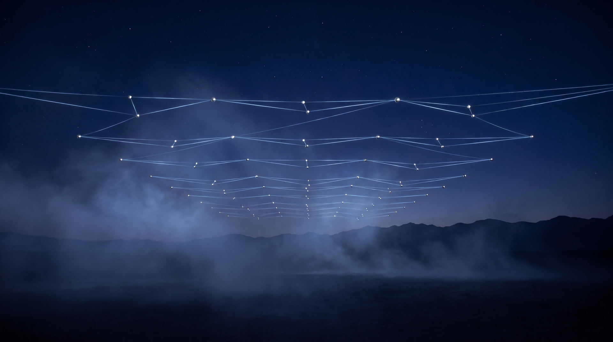

Three minutes tells you.
Six layers and fifteen documents can look like a lot. You don't need to hold any of it in your head. Take the scorecard. It names your weakest layer, and that is where you start reading.
You tried AI. It wrote you something generic.
It didn't know your clients, your history, or how you talk. So it guessed. Every owner has the same story: the AI wasn't bad. It was uninformed.
I don't know where to start.
There are too many tools and they change weekly. You don't need another tool. You need a sequence.
It doesn't sound like me.
Generic AI writes like everyone in your market. Your voice is an asset. Write it down once and every draft after sounds like you.
Everything is in my head.
If it lives only in your head, the business stops when you do. That's not a tech problem. It's a continuity problem.
Do not automate chaos.
Automation multiplies whatever you feed it. Feed it a mess, get a faster mess. That's why Groundwork builds in strict order: organize first, automate last.
Press and hold. Order is made, not bought.
Six layers, built in order. Three phases.
Phase 1 is required first: Identity, Knowledge, Governance. Phase 2 activates one Operator, not a swarm. Phase 3 makes it durable. Skip a layer and you are automating chaos.
Open the full Field Guide or download it as a PDF
Identity Phase 1 · Required first
Who you are and how you are allowed to behave.
Charter, brand voice, and decision principles, in a form both people and machines can read. AI is already answering questions about you. This layer makes it answer correctly.
A context file any AI can load.Read the full layerKnowledge Phase 1 · Required first
What the system is allowed to trust.
A structured vault of your files with Authority Levels 0–4: doctrine, standards, validated, working, untrusted. Stops the system from treating a rumor and a contract as equal.
An AI that cites your files, not the internet's guesses.Read the full layerGovernance Phase 1 · Required first
What the system is allowed to do.
Three zones: Auto-Execute, Draft & Wait, Never Automate. Escalation rules, allowed tools, and Agent Scope. A human signs off where it matters.
Three to five routine tasks off your plate.Read the full layerContinuity Phase 3 · Durability
What survives time, people, and failure.
Succession rules, override authority, and a digital estate plan so the people you trust can reach what matters. If you were gone for ninety days, would the system still work?
A foundation that outlives any one operator.Read the full layerMeasurement Phase 3 · Durability
Whether the foundation is actually working.
Signals of a working foundation: output stays on-voice without prompting, escalations are appropriate not constant, humans trust the drafts enough to use them.
You know when it is working, and when it is drifting.Read the full layerOperating Rhythm Phase 3 · Durability
How the foundation is maintained so it does not decay.
Weekly, monthly, and quarterly reviews. Who owns each layer. How changes get proposed, approved, and versioned. Order is made, not bought, and it stays that way with rhythm.
A living foundation, not a one-time build.Read the full layerBuilt by an operator who needed it first.
Adam Abdalla runs a 70,000 square foot commercial shopping center in Lafayette, Louisiana: leases, vendors, tenants, and decades of records. He built Groundwork for himself first, spent a year refining his own system, and now runs his properties on it daily. This program is that system, taught.
He is not selling AI tools. There are no subscriptions to him and no lock-in. He builds foundations you own outright.

Your knowledge, connected.First the groundwork. Then Atlas.
Here is what this method made possible on Adam's own property.
For years, the shopping center's knowledge lived the way most businesses' knowledge lives: paper leases, scattered PDFs, spreadsheets, and memory. The layers you are reading about came first. Every record digitized, named, classified, and governed. Only then was the interesting part even possible.
Atlas is the interesting part: a living command center for the property. An interactive site plan of all 27 units. The rent roll, lease runway, critical dates, and work orders, live from the records. And a concierge AI that answers questions about the property, grounded in the property's own dossier and live state, citing the record when it answers.
Atlas is not a demo and it is not for sale. It is the private tool that runs the property, owners and operator only. It exists because the files were ready first. That is the whole argument of this site, standing in one artifact.
Read the full Atlas story: ten features, and the documents each one stands on
 Atlas, sheet A-2. The real property, live in the tool.
Atlas, sheet A-2. The real property, live in the tool.
Fifteen documents. All free. All yours.
Not a course. Not a subscription. Fifteen plain-text files you write once and own forever: the working system Adam runs his own businesses on.
Layer 01
01. Identity Charter · 02. Brand Voice · 03. Decision Principles
Layer 02
04. Authority Classification · 05. Context Vault · 06. Strategic Priorities · 07. Active Constraints
Layer 03
08. Automation Decision Framework · 09. Escalation Rules · 10. Allowed Tools & Access · 11. Agent Scope
Layers 04–06
12. Continuity & Succession · 13. Session Notes · 14. Measurement Notes · 15. Operating Rhythm
Eleven documents in Phase 1, four in Phase 3. The Field Guide carries the doctrine and the core templates on paper; every one of the fifteen is taught in full, with its template, in the guide.
One assistant. Scoped. Yours.
Phase 2 is not "launch a swarm of agents." It is one Operator, given exactly the identity, knowledge, and governance you wrote in Phase 1. Here is the opening of the Operator prompt, exactly as the guide teaches it.
You are now the Operator for this organization. Load the files in this package in order. Do not invent policy. Do not expand your authority. Primary directive: raise the quality of thinking and output while protecting standards. Rules - Stay on-voice at all times. - Cite Authority Level on material claims. - If the request is Auto-Execute, do it. - If the request is Draft & Wait, produce the complete draft and stop. - If the request is Never Automate, refuse and escalate.
The full prompt, the context package, and the activation gate are in the Operator chapter of the guide.
If you want to learn the whole thing at your own pace.
The Groundwork Curriculum is a five-level, two-track open curriculum on GitHub: the same doctrine as the Field Guide, taught as a study plan. Individual track for owners and operators; Company track for teams. MIT licensed. Free forever.
Open the curriculum on GitHub or read the Field Guide first
Curriculum authorship credit: Jake Van Clief. Doctrine and structure: Adam Abdalla. Released MIT with no branding requirement: teach it, fork it, use it inside your own company.
What the market sells. What you walk away with.
We looked hard at what else is out there. Free readiness quizzes are everywhere. Complete systems are not. As far as we can tell, nobody else gives the whole thing away.
A score
The big platforms grade your readiness for free, then steer you into their stack. You end with a number and a sales call.
A course
Cohorts and certificates teach prompts and tools. The person learns. The business itself stays undocumented.
A retainer
Consultants and fractional AI officers do strong work, priced for companies with a staff to hand it to.
Groundwork hands you the fifteen working documents and one governed Operator, free, in plain files you own. If you want it built with you, the audit is where that conversation starts.
Asked by every owner we meet.
Why is this free? What's the catch?
No catch. Adam built this for himself first and runs his own businesses on it. Making the doctrine, the fifteen documents, and the curriculum public is the fastest way to make the standard the standard. If you eventually want him in the room helping you build it, that conversation starts with the audit.
Where does my data go?
Into folders on your machine. The vault is plain text files you own. Nothing is uploaded anywhere unless you choose it, and the governance layer writes that choice down.
I can't risk made-up answers.
Neither can we. The Authority Classification tags every document Level 0 through 4 so the AI knows what to obey, cite, and ignore. The Governance layer keeps a human sign-off on anything that matters. AI drafts. You decide.
I'm not technical.
You don't need to be. If you can name a folder and fill in a form, you can do this. The Field Guide was written for owners, not engineers.
How long does it take?
Phase 1 (Identity, Knowledge, Governance) in a weekend if you focus. Phase 2 (one Operator) in a week. Phase 3 (Continuity, Measurement, Rhythm) is ongoing. That's the point.
What happens when the AI companies change everything again?
Nothing happens to you. Your vault is plain text on your machine. If every AI company disappeared tomorrow, you would still own a perfectly organized set of readable files. Zero dependency.
Is this a course?
No. Courses end with notes. Groundwork ends with a working system: files organized, context written, vault classified, Operator running under rules you set. The Field Guide is the doctrine. The Curriculum is the taught version. Both are free.
What is the difference between the Field Guide and the Curriculum?
Same doctrine. Field Guide is the reference: the whole system in one PDF you can print. Curriculum is the study plan: five levels, two tracks, learn one layer at a time on GitHub.
Want it built with you? Start with the audit.
The Field Guide and Curriculum are free: read them, build it yourself, no ask. But if you want Adam in the room: sixty to ninety minutes together, no cost. You leave with a map of your current state, the gaps costing you most, and a plan. In Lafayette, across the Gulf South, or virtual anywhere.
Book your AI Readiness Audit Prefer email? adam@adamabdalla.com